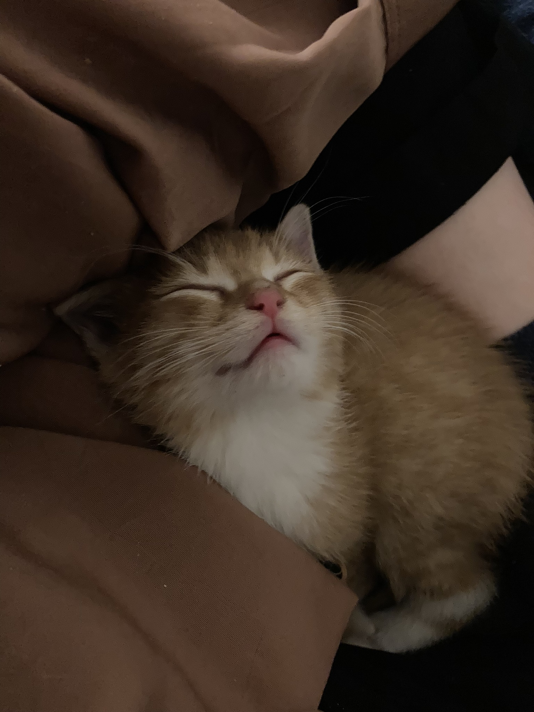
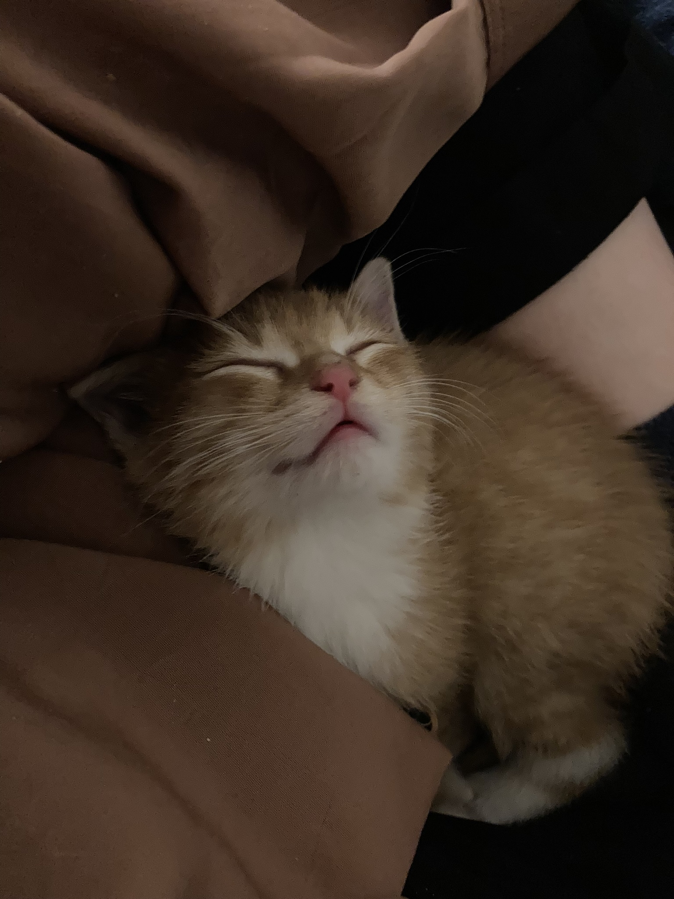
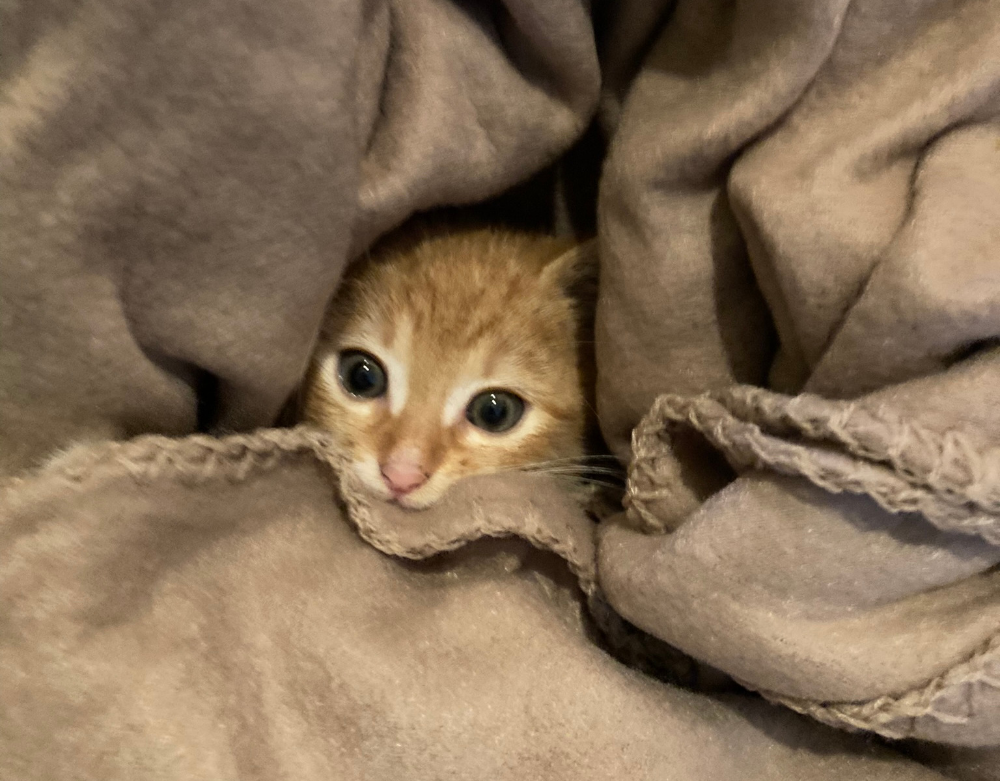
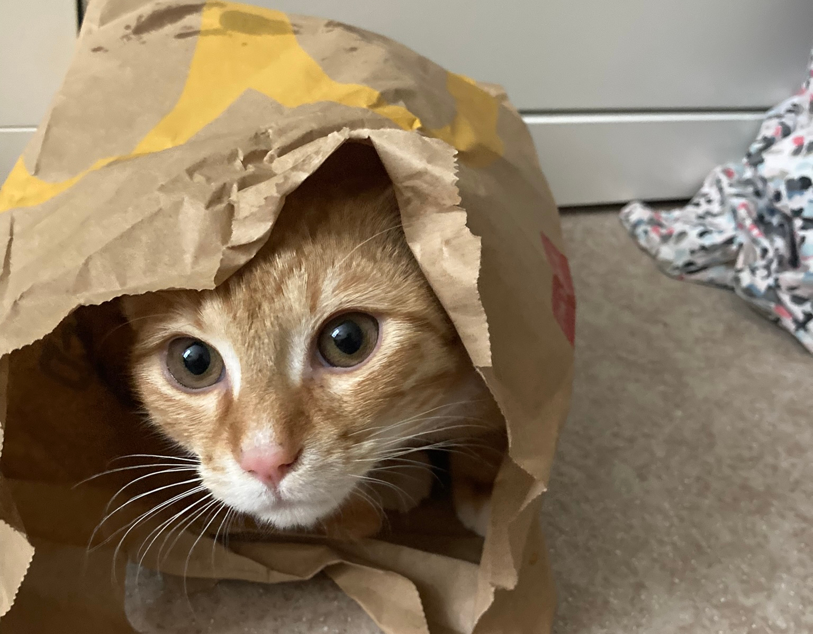
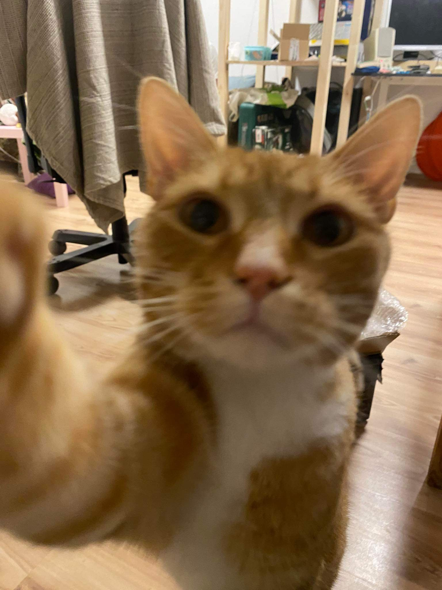

Kocour Vilém


Jmenuju se Klára Plívová a tyto stránky jsem zasvětila příběhu svého kocoura.
 Github
Github Linkedin
Linkedin
 

Vše začalo na podzimní procházce poblíž rušné zeležniční trati. Začínalo se stmívat a foukal chladný říjnový vítr. I přes hluk města jsem zaslechla vysoký pískot.
Po zvuku jsem rychle došla až k opadanému keři, kdes se mezi štěrkem choulilo malé klubíčko chlupů. Opatrně jsem se k němu přiblížila a s abolutní důvěrou mi do náruče vběhlo malé, ale odhodlané kotě, v jehož modrých očích se odrážela naděje.
Nechat si Viléma bylo rozhoduntí, které jsem tehdy se svými spolubydlícími okamžitě přijala. Hned po pár hodinách v novém prostředí dostal hlad a začal prozkoumávat vše kolem. Jeho živé osobnost prozářila každý kout našeho bytu - od honby za vlastním ocasem až po útulný spánek.


Postupně jsme sledovali, jak Vilém vyrostl ze zranitelného kotěte v sevebědomého kocoura. Postupně se přestal bát cizích lidí a jeho počáteční nedůvěru nahradila odvaha. Každým předením a hraním mi Vilém připomíná houževnatost a sílu, kterou můžeme najít i na nejneočekávanějších místech.
| 1. rok |  |
| 2. rok |  |
| 3. rok |  |